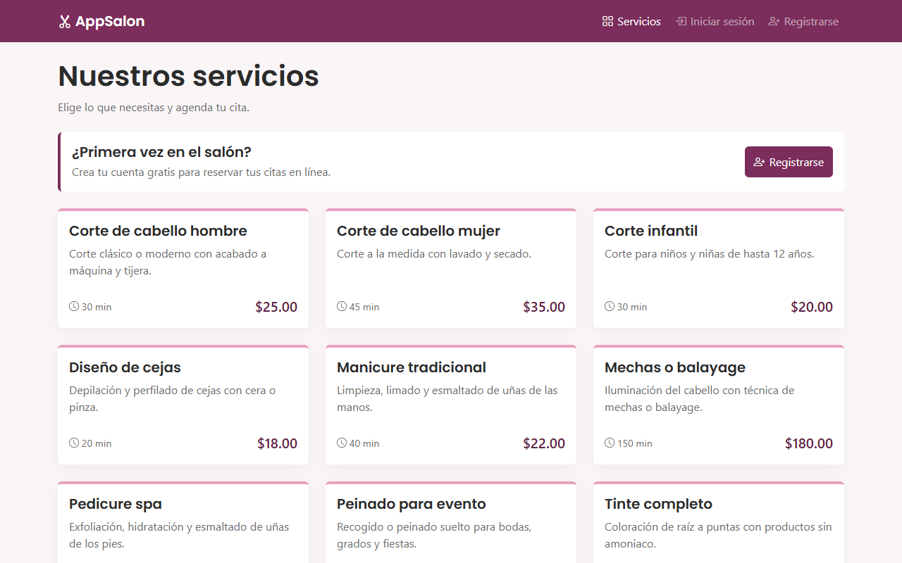
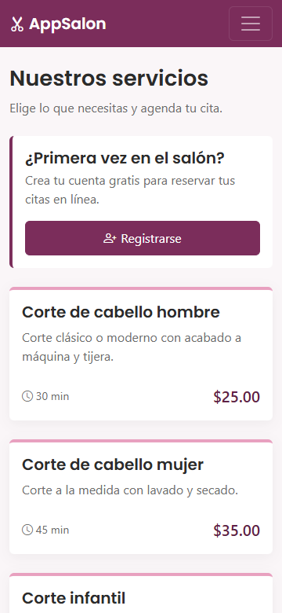
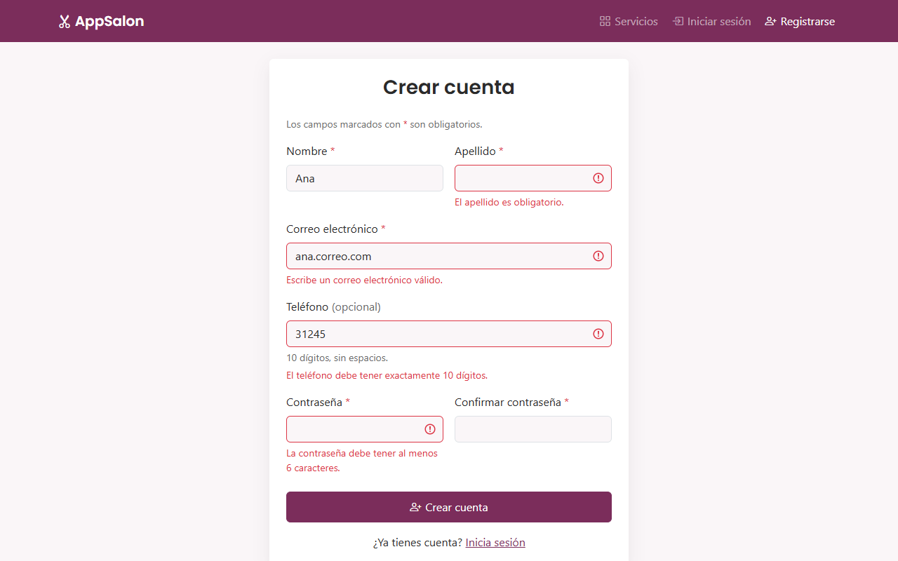
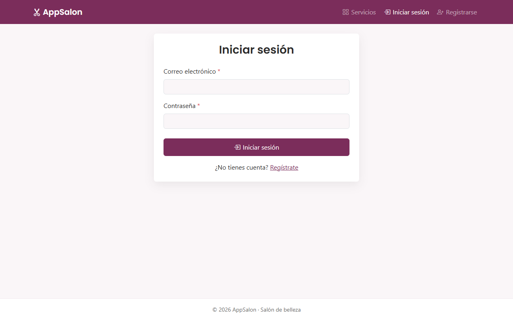
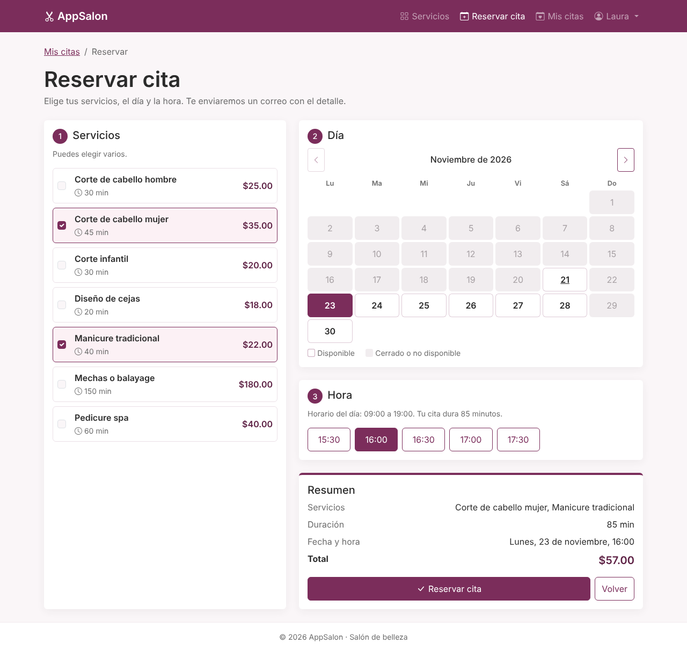
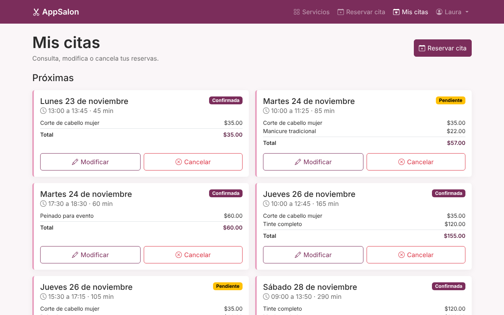
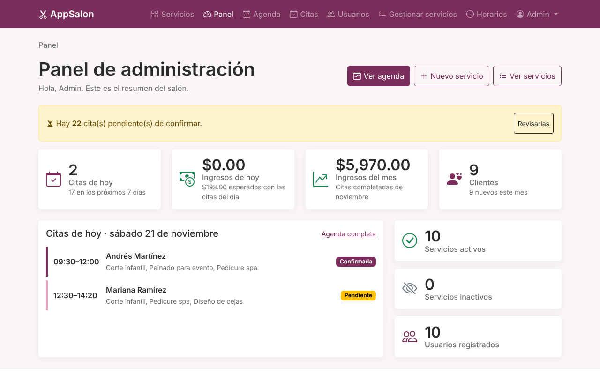
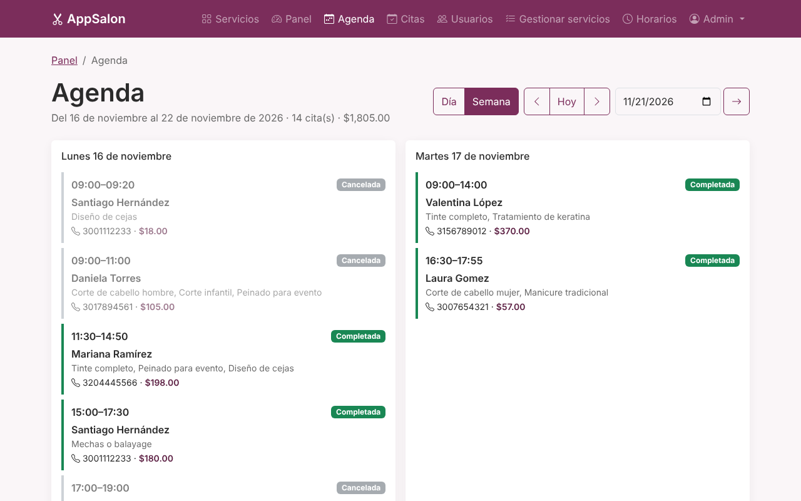
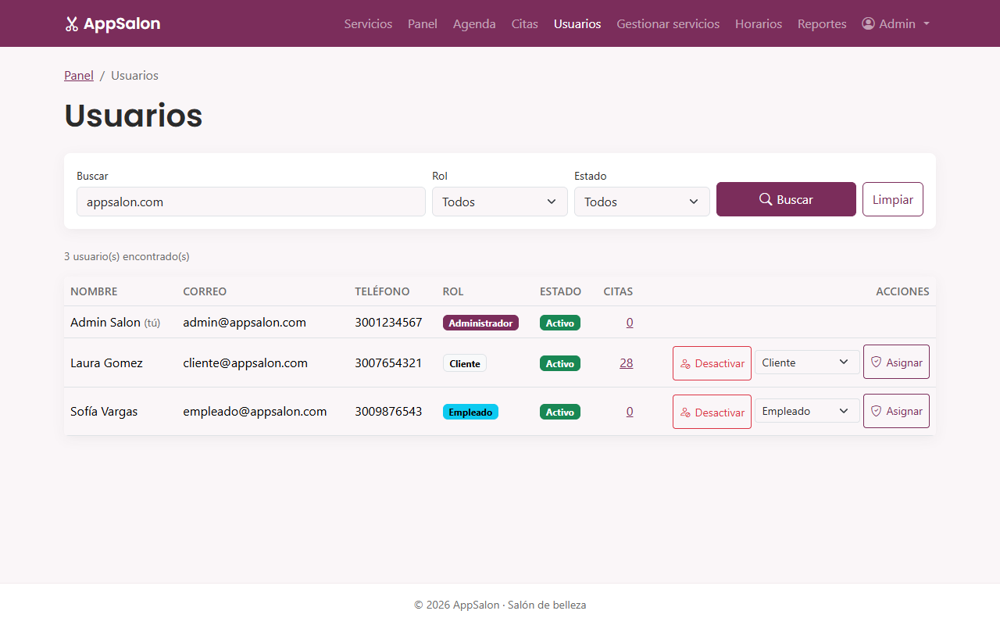
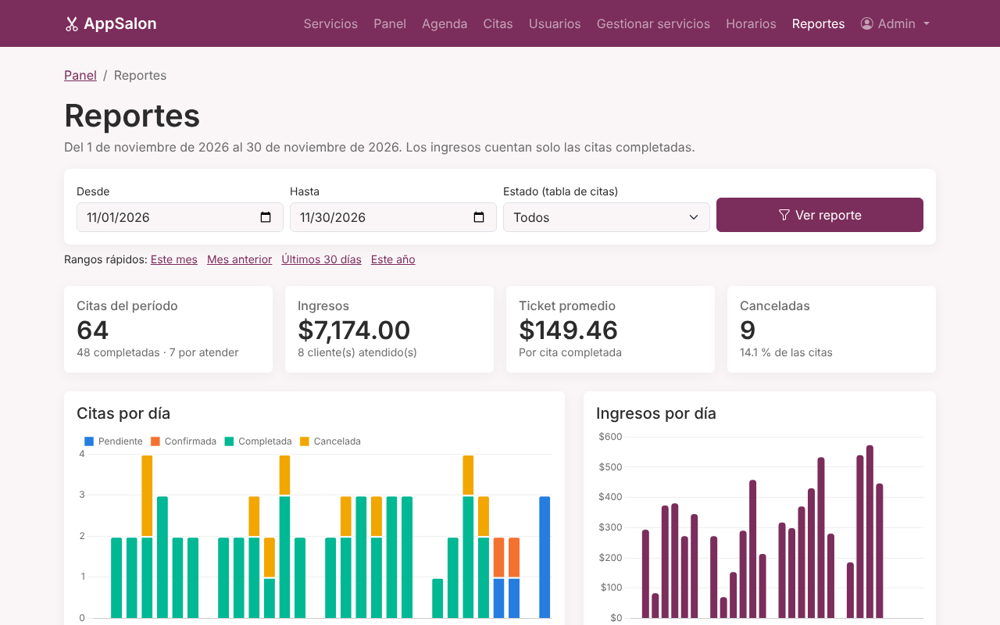

Manual de usuario · Sistema de citas para salón de belleza


AppSalon funciona en el navegador (Chrome, Edge o Firefox), en computador, tableta o celular. No hay que instalar nada.
http://127.0.0.1:8000.| Rol | Qué puede hacer | Cuenta de prueba |
|---|---|---|
| Visitante | Ver el catálogo y crear una cuenta. | No necesita |
| Cliente | Reservar citas en el calendario, ver sus citas, modificarlas y cancelarlas. | cliente@appsalon.com / Cliente123 |
| Administrador | Dashboard, agenda, citas, usuarios, servicios y horarios del salón. | admin@appsalon.com / Admin123 |
AppSalon · Entrega final (semana 16) · Laravel 12, MySQL y Bootstrap 5.
Verás «Revisa tu correo para confirmar la cuenta». Abre el correo de AppSalon y pulsa Confirmar mi cuenta. Hasta confirmarla no puedes entrar. Cada enlace sirve una sola vez.


En el inicio de sesión pulsa ¿Olvidaste tu contraseña?, escribe tu correo y abre el enlace que te llega. Elige la contraseña nueva (mínimo 6 caracteres). El enlace vence en 60 minutos y sirve una sola vez.
Cada tarjeta muestra el servicio, su descripción, la duración en minutos y el precio. Con la sesión iniciada, el botón Reservar de una tarjeta abre la reserva con ese servicio ya elegido.


| Estado | Significado |
|---|---|
| Pendiente | Reservada; el salón aún no la confirma. |
| Confirmada | El salón te espera a esa hora. |
| Completada | Ya fuiste atendido. |
| Cancelada | La cancelaste tú o el salón; no ocupa la agenda. |
Con una cuenta de administrador llegas al Panel. El menú tiene Panel, Agenda, Citas, Usuarios, Gestionar servicios, Horarios y Reportes.




| Sección | Cómo se usa |
|---|---|
| Panel | Citas de hoy, ingresos de hoy y del mes (citas completadas), clientes y aviso de citas por confirmar (botón Revisarlas). |
| Agenda | Día / Semana, flechas y Hoy para moverte. Para cambiar el estado de una cita, elígelo en la lista y pulsa ⟳; al confirmar o cancelar, el cliente recibe un correo. |
| Citas | Busca por nombre o correo del cliente y filtra por estado y fechas (Desde/Hasta). Pulsa Filtrar; ✕ quita los filtros. |
| Usuarios | Busca por nombre, correo o teléfono y filtra por rol o estado. Desactivar impide que la persona inicie sesión (se puede volver a Activar). Hacer admin / Hacer cliente cambia el rol. No puedes cambiar tu propia cuenta. |
| Gestionar servicios | Nuevo servicio: nombre, precio (0 a 999.99) y duración (10 a 480 min). ✎ edita; apaga Activo para ocultarlo sin borrarlo; 🗑 lo elimina. |
| Horarios | Enciende o apaga cada día y ajusta apertura y cierre; pulsa Guardar horario. En Bloquear una fecha elige el día y un motivo (ej.: festivo). Los cambios no cancelan citas ya reservadas: revísalas en la agenda. |
| Reportes | Elige Desde y Hasta (o un rango rápido) y pulsa Ver reporte: resumen, gráficas de citas e ingresos por día, ingresos por servicio y lista de citas. Los botones PDF y Excel (CSV) descargan cada reporte. Los ingresos cuentan solo citas completadas. |
Los avisos aparecen arriba y se cierran solos a los 5 segundos: verde si salió bien, rojo si falló, amarillo para advertencias y azul para información.
| Mensaje | Qué significa y qué hacer |
|---|---|
| Campo en rojo con un texto debajo | Ese dato no es válido. Corrígelo según el texto y vuelve a enviar. |
| «Credenciales incorrectas» | El correo o la contraseña no coinciden. Revisa mayúsculas y el correo del registro. |
| «Confirma tu cuenta desde el enlace enviado a tu correo» | Busca el correo de AppSalon (también en no deseado) y abre el enlace. |
| «Tu cuenta está desactivada» | Un administrador desactivó la cuenta. Comunícate con el salón. |
| «Ese horario ya está ocupado» | Otra persona reservó esa hora mientras elegías. Elige otra hora libre. |
| «No quedan horas libres ese día…» | Tus servicios no caben ese día. Prueba otro día o menos servicios. |
| «Esta cita ya no se puede modificar» | La cita ya pasó, está completada o cancelada. |
| «El enlace para restablecer la contraseña no es válido o ya venció» | Pide un enlace nuevo en ¿Olvidaste tu contraseña?. |
| «Demasiados intentos» (429) | Más de 5 intentos de inicio de sesión o registro en un minuto. Espera un minuto. |
| «No tienes permiso para ver esta página» (403) | Entraste a una sección de administración o a una cita que no es tuya. |
| «Algo salió mal de nuestro lado» (500) o «No pudimos…» | Falla del servidor o de la base de datos. Intenta en unos minutos; si sigue, avisa al administrador. |
¿Algo no funciona como dice este manual? Escribe al equipo con la dirección de la página, lo que hiciste y el mensaje que viste.